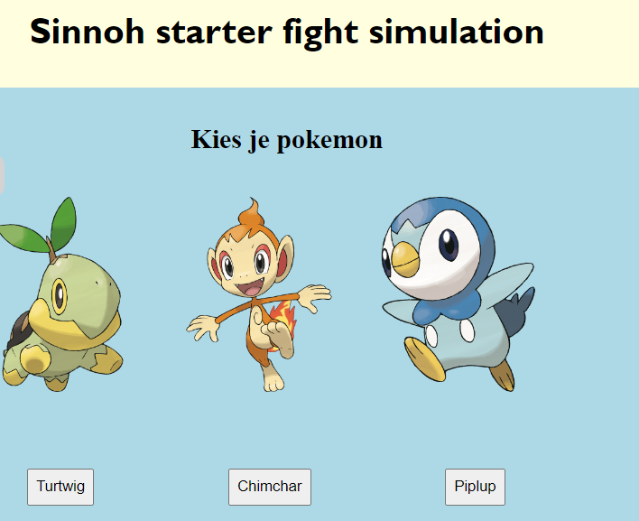

Inleiding Programeren
Voor het vak inleiding programeren leerde ik hoe ik moest werken met Javascript. Voor de eindopdracht moest in een werkend prototype maken die gebruikt maakte van html, css en heel veel javascript. Ik heb hiervoor gekozen om een pokemonfighter te maken. Bij de pokemon fighter kan de gebruiker verschillende aanvallen en pokemons kiezen. Ook wordt de aanval van de tegenstader en de tegenstader zelf ook willekeurig. Daarnaast wordt er ook doormiddel van javascript iedere keer als je een gevecht start een muziekje gespeeld.
